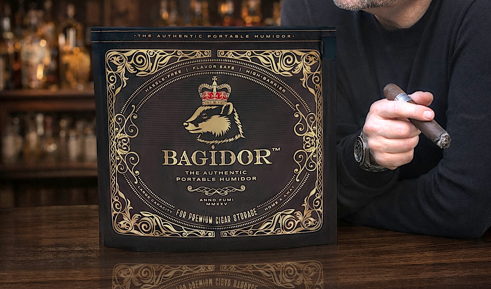
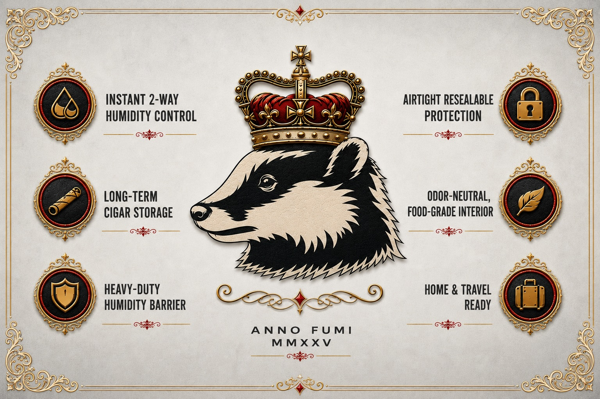

Easy Start to Cigar Storage
This option provides a simple, inexpensive, and zero-maintenance entry point for first-time smokers looking for a dependable alternative to traditional humidors.
Meet Bagidor
A modern, portable humidor designed to help keep cigars properly stored at home, at the lounge, or on the go. Durable, dependable, and ready when you are.

Why Bagidor

Bagidor Uses
This option provides a simple, inexpensive, and zero-maintenance entry point for first-time smokers looking for a dependable alternative to traditional humidors.
It features a food-grade, odor-free, and hygienic interior designed to preserve natural cigar aromas without any plastic off-gassing.
This solution offers an immediate, small-footprint way to handle overflow and scale a growing collection when primary humidors are completely full.
It allows smokers to quarantine, rest, or segregate specific cigars, such as flavored, aged, or high-aroma varieties, to prevent flavor contamination.
This setup provides a reliable, set-it-and-forget-it sealed environment perfect for aging boxes or storing cigars for months or years.
It serves as a seamless transition from home storage to travel, making it ideal for weekend getaways, golf outings, or poker nights without needing to repack.
This minimalist, clutter-free setup is perfectly suited for apartments, condos, RVs, or offices where space for traditional furniture is limited.
It offers occasional smokers an inexpensive, straightforward storage solution that requires no seasoning, setup, or overthinking.
The opaque design provides private, out-of-sight storage that is convenient for shared spaces, guests, or travel without displaying a traditional humidor.
This practical, premium-designed item makes an excellent gift for holidays, birthdays, or Father's Day, especially for aficionados who already have everything.
Getting Started with Bagidor
A brief setup walkthrough helps ensure your cigars are stored correctly from the first use.
Watch the Setup VideoFAQs
BAGIDOR is a premium portable humidor and cigar storage system designed to keep cigars properly humidified without the setup, maintenance, or bulk of a traditional humidor.
Yes. BAGIDOR uses a high-barrier, resealable environment paired with an included 2-way humidity control pack to help maintain proper humidity and preserve cigar aroma, flavor, and condition.
Yes. BAGIDOR was designed by a cigar enthusiast to provide dependable humidity control and a protective storage environment suitable for everything from everyday smokes to premium cigars.
No. BAGIDOR uses a food-grade, odor-free, non-reactive interior designed to preserve cigar aroma and flavor without introducing unwanted odors or affecting taste.
No. BAGIDOR requires no seasoning, distilled water, gels, beads, or ongoing maintenance. Simply place your cigars inside and let the included humidity pack do the work.
BAGIDOR is suitable for both short-term travel and longer-term storage. Cigars can remain properly stored for extended periods when maintained correctly. The included Integra Boost 69% RH humidity pack helps maintain proper humidity, and Integra recommends replacing the pack approximately every 3 months, though actual lifespan may vary based on climate, temperature, number of cigars stored, and how often BAGIDOR is opened.
BAGIDOR offers a simpler, more portable, low-maintenance way to store cigars without seasoning, liquids, cedar upkeep, or bulky containers, ideal for home, travel, cigar lounges, golf outings, and overflow storage.
BAGIDOR fits up to 40 cigars depending on cigar size and ring gauge. Capacity will vary based on vitola and how tightly cigars are packed.
Yes. BAGIDOR was designed to make cigar storage easy at home and on the go. It is ideal for travel, lounges, vacations, golf outings, weekends away, and keeping cigars protected wherever you smoke.
BAGIDOR includes an Integra Boost 69% RH 2-way humidity control pack that automatically releases or absorbs moisture as needed to maintain humidity. Integra recommends replacing the pack approximately every 3 months.
Contact Us